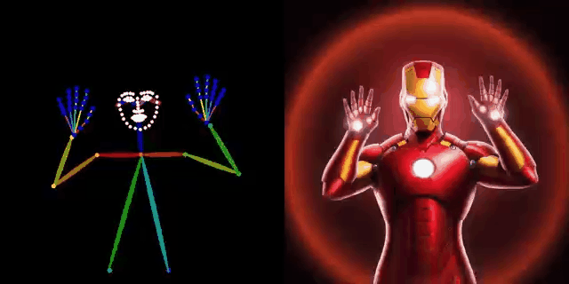
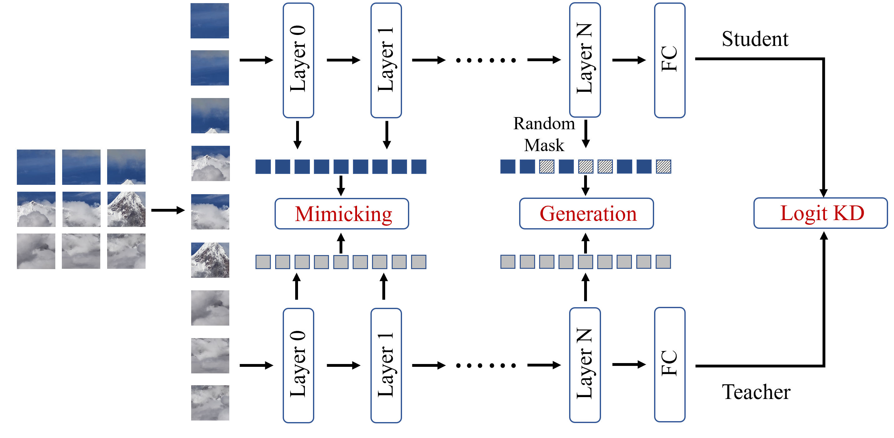
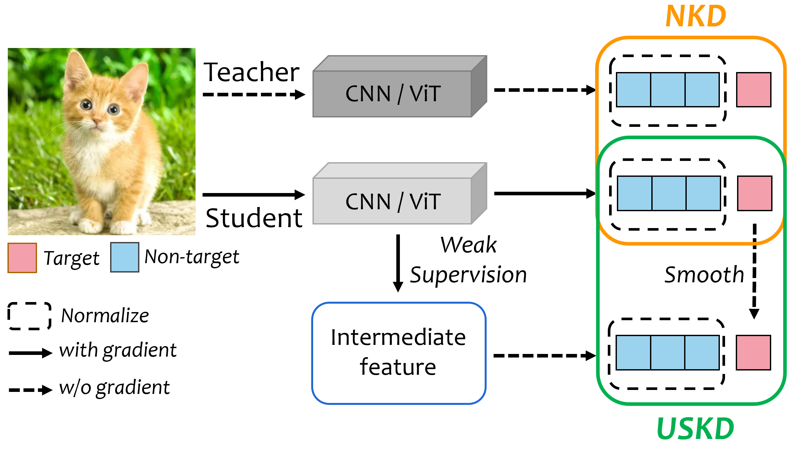
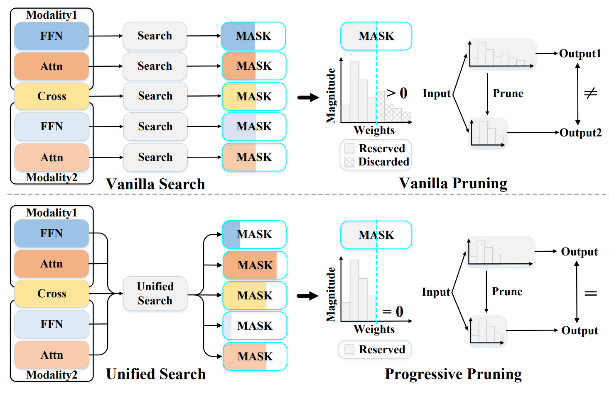
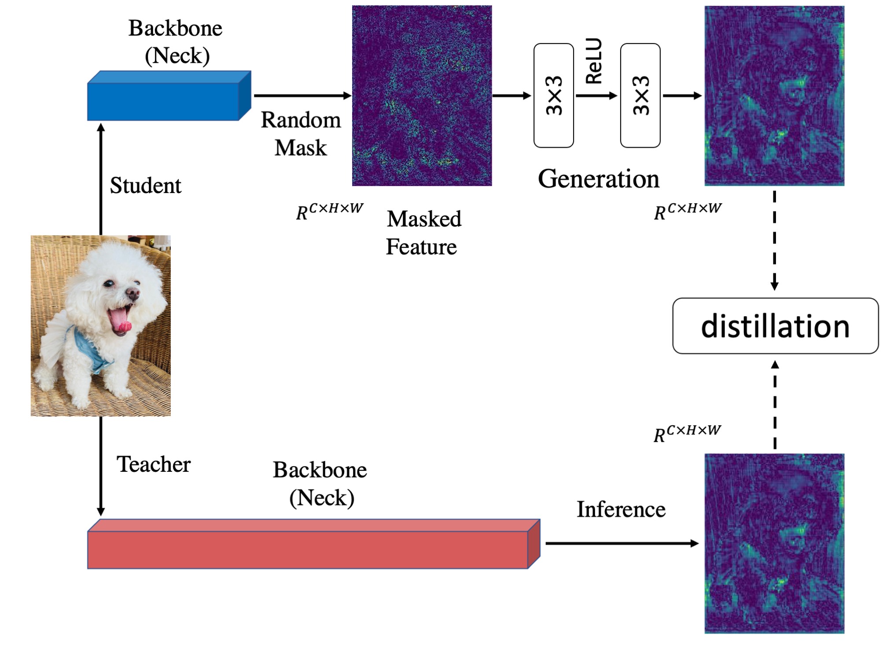
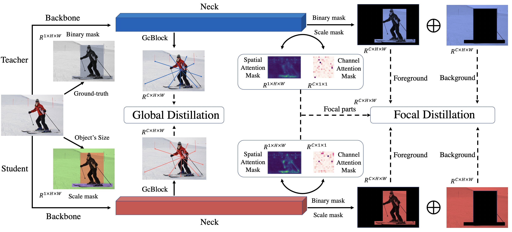

|
|
BiographyI am currently a 3rd-Year Master student at Shenzhen International Graduate School, Tsinghua University, under the guidance of Chun Yuan. I got my B.Eng. degree at school of Astronautics, Beihang University. I interned at Bytedance's AI Lab (adviced by Zhe Li) and IDEA (adviced by Ailing Zeng and Yu Li).Currently, my research topic is model compression, with a particular focus on knowledge distillation. I devote to improve various models' performance for various tasks, including classification, detction, segmentation, human pose estimation, image generation and so on. I am looking for a full-time job now. |
Selected Publications
|  |
Effective Whole-body Pose Estimation with Two-stages Distillation

Zhendong Yang, Ailing Zeng, Chun Yuan Yu Li Preprint, Under Review Paper zhihu |
|  |
ViTKD: Practical Guidelines for ViT feature knowledge distillation

Zhendong Yang, Zhe Li, Ailing Zeng, Zexian Li, Chun Yuan Yu Li Preprint, Under Review Paper |
|  |
From Knowledge Distillation to Self-Knowledge Distillation: A Unified Approach with Normalized Loss and Customized Soft Labels
Zhendong Yang, Ailing Zeng, Zhe Li, Tianke Zhang, Chun Yuan Yu Li International Conference on Computer Vision 2023 (ICCV 2023) Paper zhihu |
|  |
UPop: Unified and Progressive Pruning for Compressing Vision-Language Transformers

Dachuan Shi, Chaofan Tao, Ying Jin, Zhendong Yang*, Chun Yuan Jiaqi Wang International Conference on Machine Learning 2023 (ICML 2023) Paper zhihu |
|  |
Masked Generative Distillation

Zhendong Yang*, Zhe Li*, Mingqi Shao, Dachuan Shi, Zehuan Yuan, Chun Yuan European Conference on Computer Vision 2022 (ECCV 2022) Paper zhihu |
|  |
Focal and Global Knowledge Distillation for Detectors

Zhendong Yang, Zhe Li, Xiaohu Jiang, Yuan Gong, Zehuan Yuan, Danpei Zhao, Chun Yuan Computer Vision and Pattern Recognition 2022 (CVPR 2022) Paper zhihu |
Academic Service
- Reviewers of: CVPR, ECCV, ICCV, NeurIPS
last updated at .